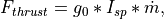
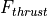
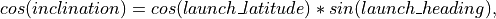

WSF_GUIDED_MOVER¶
Script Class: WsfGuidedMover
- mover WSF_GUIDED_MOVER¶
mover <name> WSF_GUIDED_MOVER ... base mover commands ... integration_timestep ... integration_method ... compute_all_forces_each_substep ... coordinate_frame ... maintain_inclination ... show_status ... show_trajectory ... align_heading_with_velocity ... check_for_ground_impact ... time_history_path ... Stage Definition 1 aero ... empty_mass ... fuel_mass ... total_mass ... thrust | sea_level_thrust | vacuum_thrust ... thrust_table | sea_level_thrust_table | vacuum_thrust_table ... reverse_thrust specific_impulse | sea_level_specific_impulse | vacuum_specific_impulse ... nozzle_exit_area ... thrust_duration ... burn_rate ... burn_rate_table ... throttle ... thrust_vectoring_angle_limit ... thrust_vectoring_time_limits ... lateral_thrust_gain ... divert_thrust ... divert_fuel_mass ... divert_fuel_flow_rate ... divert_altitude_limits ... pre_ignition_coast_time ... pre_separation_coast_time ... integration_timestep ... ignition_failure_probability ... separation_failure_probability ... angle_of_attack ... bank_to_turn ... skid_to_turn ... end_stage Stage Definition <n> ... end_stage script void on_stage_ignition(int aStage) ... end_script script void on_stage_burnout(int aStage) ... end_script script void on_stage_separation(int aStage) ... end_script end_mover
Overview¶
WSF_GUIDED_MOVER implements a mover that is capable of representing a guided glide bomb, or a single or multistage guided missile or rocket with a moderate degree of fidelity. The model has the following characteristics:
3-degree-of-freedom (3-DOF) equations of motion are used, treating the body as a point-mass. Angular rates and attitude are not modeled. The orientation of the platform is aligned with the velocity vector with no angle-of-attack or roll. Deviations from this orientation may be imposed by the angle_of_attack, bank_to_turn and the guidance program ATTITUDE_PROGRAM, but they do not affect performance. If higher fidelity is required then WSF_P6DOF_MOVER should be considered, but it has greater data and run-time requirements.
Propulsion is not required to model a glide-bomb type weapon, but if propulsion is desired, each the thrust, fuel mass and rate of fuel consumption can be provided for each stage.
Mass properties and propulsion input are both flexible, and any omitted values will be calculated if possible. On multistage vehicles, lower stages will carry as payload the aggregate mass of each upper stage. Interrelated values include thrust, burn_rate, thrust_duration, specific_impulse, fuel_mass, empty_mass, total_mass. If all values are specified, but they do not sum consistently, an error message will be generated during initialization.
Aerodynamic drag and lift are utilized to respond to guidance commands (See aero class.) The platform will turn to intercept a target track within the specified aerodynamics constraints. The model will not properly guide to intercept if aerodynamics are insufficient due to inadequate maximum lift coefficient or inadequate dynamic pressure (flight at extreme altitudes or low speeds).
The trajectory to be flown will be determined by the WSF_GUIDANCE_COMPUTER processor that must be present on the same platform. The guidance computer will supply the desired lateral and vertical forces to steer the mover.
A WSF_GUIDED_MOVER is typically part of a platform type that is launched by an instance of WSF_EXPLICIT_WEAPON. The platform type also typically includes a WSF_GUIDANCE_COMPUTER to provide guidance and a WSF_WEAPON_FUSE to indicate when to terminate.
Derivation of Stage Input Values¶
A lot of flexibility exists in what input values can be specified to generate the necessary internal values. The internal values necessary for proper operation are:
Initial mass for the structure and fuel.
When the engine starts and stops and any coasting period before the engine starts or after the engine stops and prior to stage separation.
At each time step it must be able to determine the current thrust and fuel consumption rate.
The mover will attempt to take whatever input values are provided and derive any necessary internal values. As an example, to derive the necessary mass values:
If total_mass and fuel_mass are supplied, empty_mass can be derived.
If total_mass, burn_rate and thrust_duration are provided:
fuel_mass can be computed as burn_rate * thrust_duration
empty_mass can then be computed as total_mass - fuel_mass
If total_mass, specific_impulse, thrust and thrust_duration are provided:
burn_rate can be computed using the definition of specific impulse (see below).
fuel_mass can then be computed as burn_rate * thrust_duration
empty_mass can then be computed as total_mass - fuel_mass
The definition of specific impulse is very useful because it relates thrust, burn rate and specific impulse:

Where:
 is the thrust of the engine(Newtons)
is the standard acceleration due to gravity at the Earth’s surface (9.80665 m/s2)
is the specific impulse (seconds)
is the mass flow rate (kg/s)
Given two of the three variable values the third can be determined.
Things become a little more complicated when ‘referenced’ thrust or specific impulse values are provided (i.e.: vacuum_thrust, sea_level_thrust, vacuum_specific_impulse, sea_level_specific_impulse). If ANY referenced value is provided then ALL must either be provided or derivable. The following derivation rules are applied in order.
If three of the values are provided, the fourth can be trivially determined.
If vacuum_thrust and sea_level_thrust are provided and burn_rate is provided or derivable AND nozzle_exit_area is NOT provided, vacuum_specific_impulse and sea_level_specific_impulse can be determined using the definition of specific impulse. nozzle_exit_area will also then be derived.
If vacuum_specific_impulse and sea_level_specific_impulse are provided and burn_rate is provided or derivable AND nozzle_exit_area is NOT provided, vacuum_thrust and sea_level_thrust can be determined using the definition of specific impulse.
If only one of vacuum_thrust or sea_level_thrust is provided AND nozzle_exit_area is provided, the other can be derived.
If only one of vacuum_specific_impulse or sea_level_specific_impulse is provided AND nozzle_exit_area is provided AND the paired thrust value is provided or derivable, the other value can be determined.
Note that derivations are recursively applied until no further derivations can be performed. The use of show_status is encouraged to ensure that the derived values are appropriate.
Global Commands¶
- integration_timestep <time-value>¶
Specifies the integration timestep to be used. If a value of zero is specified the mover will not break update requests into smaller intervals.
This command can be specified inside and outside stage blocks. If it is outside the block then it becomes the default for any stage that does not specify a value.
Default: 0.0 seconds
- integration_method [ rk2 | rk4 | trapezoidal ]¶
Select the method for integrating the equations of motion as one of the following:
rk2 - 2-stage Runge-Kutta
rk4 - 4-stage Runge-Kutta
trapezoidal - trapezoidal
Warning
Pre-2.9 versions of AFSIM have not fully implemented the Runge-Kutta methods for this mover. Instead of computing all forces for each integration substep, only the gravitational force was recomputed. This meant that the integration did not achieve an actual Runge-Kutta integration quality. When selecting a Runge-Kutta method, be sure to consider the option compute_all_forces_each_substep.
Default: rk2
- compute_all_forces_each_substep <boolean-value>¶
Specify whether Runge-Kutta methods should compute all forces for each integration sub-step. If this is false, then only the gravitational force will be computed for each sub-step, and the aerodynamic and thrust forces will be computed once from the state at the start of the integration step. This option is ignored when the integration_method is trapezoidal. The default value for this option is false, which matches how the WSF_GUIDED_MOVER had been implemented in pre-2.9 versions of AFSIM.
Note
The default value for this is false to avoid perturbing existing simulation results. Any new scenarios developed should use true for this option. In the future, the path to eliminating the legacy, incorrect, Runge-Kutta implementation will be to change the default value to true. For this reason, in cases where the legacy behavior is desired, it is recommended to explicitly indicate that this flag is set to false.
Default: false
- coordinate_frame [ wcs | eci ]¶
Specify the coordinate frame in which the equations of motion are integrated as either:
wcs - World Coordinate System
eci - Earth Centered Inertial
‘eci’ is currently intended only when modeling an orbital launch vehicle and should not be used for other purposes. Note that a launch computer created with ECI coordinates is specific to a launch location.
Default: wcs
- maintain_inclination <boolean-value>¶
When modeling an orbital launch vehicle (using coordinate_frame eci), the inclination of the parking orbit is a function of the launch latitude and launch azimuth (or heading). For a non-rotating spherical Earth, the inclination of the orbit is defined by:

But the Earth is rotating and that introduces an easterly ECI velocity component to the vehicle (in excess of 460 m/s when launched at the equator.) If anything other than a pure easterly or westerly launch heading is utilized then the additional easterly velocity will have some part that is lateral to the intended flight path and will result in the trajectory bending slightly towards the equator. In real life the mission planners will adjust the initial conditions and/or guidance to ensure the vehicle reaches the desired orbit altitude with the desired inclination.
If the value of this command is true, the cross-track velocity component due to the Earth’s rotation will be ignored and the trajectory will not bend towards the equator. This makes it easier to create scenarios that require a specific orbit inclination because one can simply use the above equation to determine the launch heading given the launch latitude and desired inclination.
Default: false
- show_status¶
Causes a message to be written to standard output whenever a staging operation takes place. This is automatically enabled if debug is also enabled.
- show_trajectory¶
Enables a printout of downrange distance, speed, Mach number, and applied aerodynamic forces to standard output.
- align_heading_with_velocity <boolean-value>¶
If true, use the velocity of the owning platform (if non-zero) to determine the projected heading. Otherwise, use orientation.
Default: false
- check_for_ground_impact¶
Enables internal checking for ground impact. This can be used where the mover is simply being used to model an orbital launch vehicle or the spent stage of a rocket. Formerly one had to define an instance of WSF_GROUND_TARGET_FUSE on such platforms to detect if they crashed into the ground. If this was not done the platform would keep going and never be deleted.
- time_history_path <path-name>¶
If specified, indicates the path.
Stage Definition¶
A mover based on WSF_GUIDED_MOVER must contain one or more stage blocks.
stage <stage-number>
... stage subcommands ...
end_stage
where <stage number> must be a value that is greater than or equal to 1 and less than or equal to the current number of defined stages plus one. If the value specifies a stage that already exists then the enclosed subcommands override the values in that stage. If the value is equal to the current number of defined stages plus one then a new stage is created and populated with the enclosed subcommands. It is invalid to specify a stage number that is more than one higher than the current highest defined stage number.
Following are the the subcommands that may occur in a stage block:
- aero <aero-type-name>¶
- aero none¶
Specifies the aerodynamics type name for this stage. Type must be known at initialization time.
An <aero-type-name> of none implies that no aerodynamic forces will be calculated. This is appropriate for stages that operate outside of the atmosphere.
Default: Must be provided.
- empty_mass <mass-value>¶
Specifies the mass of the stage without fuel.
Default: 0.0 kg
- fuel_mass <mass-value>¶
Specifies the mass of the fuel on the stage.
Default: 0.0 kg
- total_mass <mass-value>¶
Specifies the total mass of the stage, which is the sum of empty_mass and fuel_mass but does not include the mass of any upper stages on top of this one (considered payload).
Default: 0.0 kg
Note
For backward compatibility, this same value may be supplied via the keywords: ‘launch_mass’, ‘mass’, ‘initial_mass’, or ‘weight’, but future support of these keywords is not guaranteed.
- thrust <force-value>¶
- sea_level_thrust <force-value>¶
- vacuum_thrust <force-value>¶
Specifies the thrust of the propulsion system.
If this value is not provided an attempt will be made to derive it from other provided or derived input values.
Note
If a sea level or vacuum value is specified then nozzle_exit_area may also need to be supplied. See Derivation of Stage Input Values above.
- thrust_table … end_thrust_table¶
- sea_level_thrust_table … end_sea_level_thrust_table¶
- vacuum_thrust_table … end_vacuum_thrust_table¶
Defines thrust as a function of time.
thrust_table <time-1> <thrust-1> ... <time-n> <thrust-n> end_thrust_table
Note
Time values must be monotonically increasing and there must be at least two time/thrust entries.
Note
If a sea level or vacuum thrust table is specified alone then nozzle_exit_area must be supplied. See Derivation of Stage Input Values above.
- reverse_thrust¶
Indicates the thrust is to be applied in the reverse direction (i.e., it is acting as a braking force instead of a propelling force).
- specific_impulse <time-value>¶
- sea_level_specific_impulse <time-value>¶
- vacuum_specific_impulse <time-value>¶
Specify the specific impulse of the propulsion system with respect to a particular condition.
If this value is not provided an attempt will be made to derive it from other provided or derived input values.
Note
If a sea level or vacuum value is specified then nozzle_exit_area may also need to be supplied. See Derivation of Stage Input Values above.
Note
If specific impulse is given in N-sec/kg, one must divide by 9.80665 m/sec2 to get units of seconds.
- nozzle_exit_area <area-value>¶
Specifies the exit area of the engine nozzle. This is used to adjust a sea level or vacuum reference thrust or specific impulse values from the reference value to the value at the current operating altitude.
Default: none - this always required when vacuum_thrust_table or sea_level_thrust table is used. If may be required when using sea level or vacuum referenced values for thrust or specific impulse. See Derivation of Stage Input Values above.
- thrust_duration <time-value>¶
Specifies the amount of time the engine will produce the specified thrust.
If this value is not provided an attempt will be made to derive it from other provided or derived input values.
The last time value in the burn_rate_table if provided.
The last time value in the thrust_table, sea_level_thrust_table or vacuum_thrust_table if provided.
Computed from other available values.
Note
Depending on what input values are provided, the actual thrusting time may be different than this value. The engines will continue to burn as long as fuel is available or until terminated by the guidance computer.
- burn_rate <mass-flow-value>¶
Specifies the propellant burn rate while thrusting.
If this value is not provided an attempt will be made to derive it from other provided or derived input values.
- burn_rate_table …end_burn_rate_table¶
Defines propellant burn rate as a function of time.
burn_rate_table <time-1> <burn-rate-1> ... <time-n> <burn-rate-n> end_burn_rate_table
Note
Time values must be monotonically increasing and there must be at least two time/burn_rate entries.
- throttle <table-value>¶
This provides a function to adjust the current thrust and burn rate (The adjustment is just a multiplication). The dependent value is the non-dimensional throttle factor is greater than or equal to zero. A value of zero corresponds to no thrust and one corresponds to full thrust. Values greater than one are allowed when the base thrust and burn rate values are less than the maximum.
The allowed independent variables (and their units) are:
time (<time-units>): The time since the engine ignited.
altitude (<length-units>): The altitude of the platform.
speed (<speed-units>: The speed of the platform
mach (non-dimensional): the speed of the platform specified as a Mach number.
- thrust_vectoring_angle_limit <angle-value>¶
Specifies the maximum angle to which the thrust vector can be steered.
Default: 0 deg (thrust vectoring is not allowed).
- thrust_vectoring_time_limits <time-value> <time-value>¶
Specifies the minimum and maximum times (relative to the ignition time of the current stage) in which thrust vectoring can be employed.
Default: No limits. Thrust vectoring may be employed anytime while the engine is producing thrust.
- lateral_thrust_gain <real-value>¶
Lateral forces may be applied by vectoring the thrust of the engine or through the use of thrusters. These forces typically typically have a large moment arm (the engine is at the end of a rocket and is some distance from the center of gravity) and as such, introduces a rotation which then causes a change in the direction of the velocity vector. This issue is that this model treats the body as a point-mass (See Overview) and does not consider angular rates - it operates by ‘pushing’ the mass to change direction. It takes more force to ‘push’ the mass to change direction by a given angle than it takes to rotate the same amount. Because more force is needed, a higher vectoring angle is needed, thus stealing more thrust from the axial component.
This is a fudge factor that attempts to compensate for the difference. It typically isn’t important except when creating orbital launch vehicles that are operating at the edge of performance to lift large masses into orbit. If required, values of 5 or 10 aren’t unreasonable. Don’t be afraid to go even higher.
Default: 1
- divert_thrust <force-value>¶
Specifies the amount of thrust to be considered available from thrusters. The ‘divert’ capability is a trivial implementation of real thrusters. It was initially provided so vehicles could still maneuver at high altitudes where available aerodynamic forces are small or non-existent.
At any given time, the guidance computer (WSF_GUIDANCE_COMPUTER) determines the accelerations required to achieve the current objectives (intercept, turn to a heading, climb to an altitude, etc.) WSF_GUIDED_MOVER will attempt to satisfy the requested accelerations as follows:
Utilize thrust vectoring to satisfy as much of the request as possible. Thrust vectoring is available if thrust_vectoring_angle_limit is defined.
Utilize available aerodynamic forces to satisfy as much of whatever remains of the request as possible.
Utilize divert thrust to satisfy as much of whatever remains of the request as possible. Divert thrust is available when all of the following are true:
divert_thrust is greater than zero.
The current divert fuel mass (initially the value of divert_fuel_mass) is greater than zero.
The current altitude is within the limits specified by divert_altitude_limits.
Any part of the request that remains after the preceding steps will be unsatisfied.
As mentioned above, this is a trivial implementation. Real thrusters typically operate at full thrust for very brief periods. Because of the simple nature of WSF_GUIDED_MOVER (3-DOF, point mass, simplified aerodynamics) a true thruster model is not reasonable. Less than full thrust and fuel flow rate are utilized if the requested accelerations do not require it. A real model would typically actuate the thruster for a shorter period of time.
Default: 0 Nt (divert is not available)
Note
If divert_thrust is greater than zero then divert_fuel_mass and divert_fuel_flow_rate must both be greater than zero.
Note
divert_thrust should not be specified in a WSF_GUIDED_MOVER that is part of a weapon scenario that is being used by weapon_tools to generate WSF_BALLISTIC_MISSILE_LAUNCH_COMPUTER data, but can be used in a WSF_GUIDED_MOVER for the same weapon scenario being executed by mission or Warlock.
- divert_fuel_mass <mass-value>¶
Specifies the initial mass of fuel available for divert thrust. When divert_thrust is used it will expend the divert fuel until it is no longer available.
Note
divert_fuel_mass is not considered as part of the mass of the vehicle (i.e.: its mass does not affect the equations of motion). divert_fuel_mass and divert_fuel_flow_rate serve only to limit how long divert can be employed. The assumption being made here is that the thruster and its mass are small compared to the rest of the vehicle.
Default: 0 kg (A value greater than zero must be specified if divert_thrust is greater than zero)
Note
divert_fuel_mass should not be specified in a WSF_GUIDED_MOVER that is part of a weapon scenario that is being used by weapon_tools to generate WSF_BALLISTIC_MISSILE_LAUNCH_COMPUTER data, but can be used in a WSF_GUIDED_MOVER for the same weapon scenario being executed by mission or Warlock.
- divert_fuel_flow_rate <mass-flow-value>¶
Specifies the rate at which the divert fuel will be used when full divert thrust is employed. If only some of the divert thrust is required to satisfy the current request then the fuel flow rate will be decreased proportionally.
Note
Specifying a small value will make divert available for a longer period.
Default: 0 kg/s (A value greater than zero must be specified if divert_thrust is greater than zero)
Note
divert_fuel_flow_rate should not be specified in a WSF_GUIDED_MOVER that is part of a weapon scenario that is being used by weapon_tools to generate WSF_BALLISTIC_MISSILE_LAUNCH_COMPUTER data, but can be used in a WSF_GUIDED_MOVER for the same weapon scenario being executed by mission or Warlock.
- divert_altitude_limits <length-value> <length-value>¶
Specifies the minimum and maximum altitudes in which divert thrust will be considered for use.
Default: No limits (available at all altitudes)
Note
divert_altitude_limits should not be specified in a WSF_GUIDED_MOVER that is part of a weapon scenario that is being used by weapon_tools to generate WSF_BALLISTIC_MISSILE_LAUNCH_COMPUTER data, but can be used in a WSF_GUIDED_MOVER for the same weapon scenario being executed by mission or Warlock.
- pre_ignition_coast_time <time-value>¶
Specifies the amount of time that will elapse between the start of the stage and when the engine will ignite.
Default: 0.0 sec
Note
If this value is specified for the first stage, it represents a time when the platform is still ‘on the pad’ or ‘on the rail’. The weapon platform will remain attached to the host launching platform until this time expires.
- pre_separation_coast_time <time-value>¶
Specifies the amount of time that will elapse between the burnout of this stage and its separation from the vehicle. This command has no effect for single-stage vehicles or the last stage of a multistage vehicle.
While this command combined with the pre_ignition_coast_time can be used to effect delays between stages or motor pulses, it is sometimes necessary to create dummy stages during which the vehicle just coasts. This is typically necessary when the weapon is released from the launching platform and then coasts for awhile before igniting the motor, but it my also be used for coasting and then jettisoning some mass. For instance:
stage *<n>* pre_separation_coast_time 10 sec aero <aero-type> end_stage
Default: 0.0 sec
- integration_timestep <time-value>¶
Specifies the integration timestep for this stage.
Default: The value of the global integration_timestep that occurs outside the stage definition.
- ignition_failure_probability <real-value>¶
A value in the range [ 0 .. 1 ] that specifies the probability that the engines on this stage will fail to ignite. If ignition fails the results are as follows:
Mark the mover as ‘broken’. This will trigger a MOVER_BROKEN simulation event.
The position will continue to be updated, but subject only to gravity and aerodynamic forces (i.e.: no propulsive forces.)
Default: 0.0
- separation_failure_probability <real-value>¶
A value in the range [ 0 .. 1 ] that specifies the probability that this stage will be unable to separate from the succeeding stage. If separation fails the results are as follows:
Mark the mover as ‘broken’. This will trigger a MOVER_BROKEN simulation event.
The position will continue to be updated, but subject only to gravity and aerodynamic forces (i.e.: no propulsive forces.)
Default: 0.0
- angle_of_attack <table-value>¶
By default the model simply aligns the platform with the velocity vector with no angle-of-attack (See Overview). This provides a mechanism to apply an angle of attack.
This table provides a function to specify the angle of attack. The dependent value is the angle-of-attack with units <angle-units>. The allowed independent variables (and their units) are:
time (<time-units>): The time since the engine ignited.
altitude (<length-units>): The altitude of the platform.
speed (<speed-units>: The speed of the platform
mach (non-dimensional): the speed of the platform specified as a Mach number.
Default: no angle_of_attack
Note
This does not affect the performance of the vehicle. It simply updates the attitude so sensors on other platforms get a more accurate aspect for signature lookups, and to make the visual presentation more realistic.
Note
This value takes precedence over any non-zero pitch angle caused by the guidance program ATTITUDE_PROGRAM. (If the commanded angle is zero then this value will be used.)
- bank_to_turn¶
- skid_to_turn¶
By default the model simply aligns the vehicle with the velocity vector with no roll (See Overview) ‘bank_to_turn’ indicates that a bank angle should be imposed. This angle is proportional to the amount of sideways aerodynamic forces being applied.
Default: skid_to_turn
Note
This does not affect the performance of the vehicle. It simply updates the attitude so sensors on other platforms get a more accurate aspect for signature lookups, and to make the visual presentation more realistic.
Note
This value takes precedence over any non-zero roll angle caused by the guidance program ATTITUDE_PROGRAM. If the commanded angle is zero then this value will be used.)
Script Interface¶
The mover will invoke the following script methods defined on the platform (not the mover) during certain key events in the the life of a stage. These scripts can be used to display informational data, change signatures, etc.
- on_stage_ignition¶
script void on_stage_ignition(int aStage) ... end_script
Process the ignition of stage ‘aStage’.
- on_stage_burnout¶
script void on_stage_burnout(int aStage) ... end_script
Process the burnout of stage ‘aStage’.
- on_stage_separation¶
script void on_stage_separation(int aStage) ... end_script
Process the separation of stage ‘aStage’.